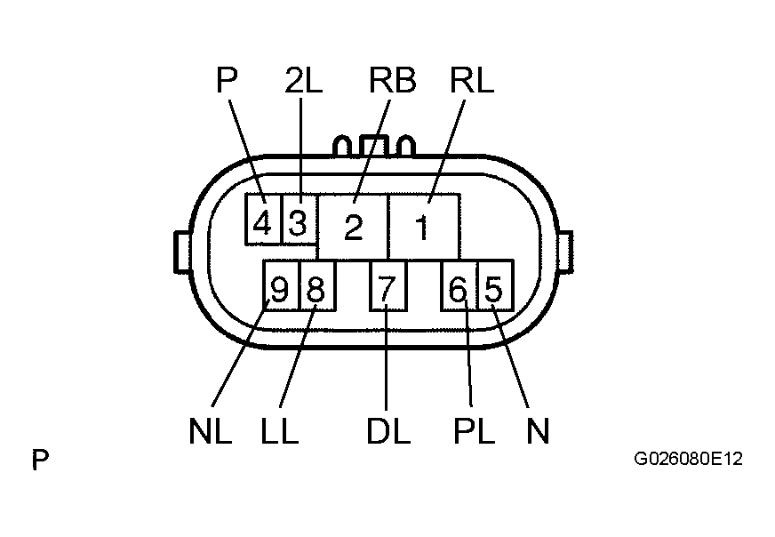

Park / Neutral Position Switch: Inspection
WARNING: This page is about a different variant/trim than selected.
- INSPECT PARK/NEUTRAL POSITION SWITCH ASSEMBLY
- Measure the resistance according to the value(s) in the table below when the shift lever is moved to each position.

Courtesy of © TOYOTA, LICENSE AGREEMENT TMS1002Standard resistance
TESTER CONNECTION SPECIFIED CONDITIONTester Connection Shift Lever Position Specified Condition 2 (RB) - 6 (PL) P Below 1 Ω 4 (P) - 5 (N) P Below 1 Ω 2 (RB) - 6 (PL) Not on P 10 kΩ or higher 4 (P) - 5 (N) Not on P 10 kΩ or higher 1 (RL) - 2 (RB) R Below 1 Ω 1 (RL) - 2 (RB) Not on R 10 kΩ or higher 2 (RB) - 9 (NL) N Below 1 Ω 4 (P) - 5 (N) N Below 1 Ω 2 (RB) - 9 (NL) Not on N 10 kΩ or higher 4 (P) - 5 (N) Not on N 10 kΩ or higher 2 (RB) - 7 (DL) D Below 1 Ω 2 (RB) - 7 (DL) Not on D 10 kΩ or higher 2 (RB) - 3 (2L) 2 Below 1 Ω 2 (RB) - 3 (2L) Not on 2 10 kΩ or higher 2 (RB) - 8 (LL) L Below 1 Ω 2 (RB) - 8 (LL) Not on L 10 kΩ or higher If the result is not as specified, replace the switch assembly.
- Measure the resistance according to the value(s) in the table below when the shift lever is moved to each position.